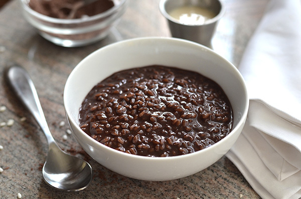

Champorado Recipe

What is Champorado?
Champorado is a traditional Filipino dessert made from glutinous rice cooked in sweetened
cocoa or chocolate. This warm, comforting porridge is often enjoyed for breakfast or as a
snack, offering a rich and creamy texture with a delicious chocolate flavor. Typically
served with a splash of evaporated milk or a sprinkle of sugar, champorado is a beloved
staple in Filipino cuisine that combines simplicity with indulgence.
Ingredients
- 5 pieces tablea or pure chocolate
- 1 3/4 cups glutinous rice
- Condensed milk
- 3/4 cup granulated white sugar
- 8 cups of water
Steps
- Pour water in a cooking pot. Bring to a boil.
- Put-in the tablea and then stir. Let it dissolve in boiling water.
- Add-in the rice. Let the water re-boil. Set the heat to low-medium and
then stir almost constantly to avoid sticking. The rice should be ready
when it absorbs the water (about 15 to 25 minutes).
- Add the sugar. Stir until the sugar dissolves.
- Transfer the champorado in individual serving bowls. Top with condensed milk. Serve. Share and enjoy.